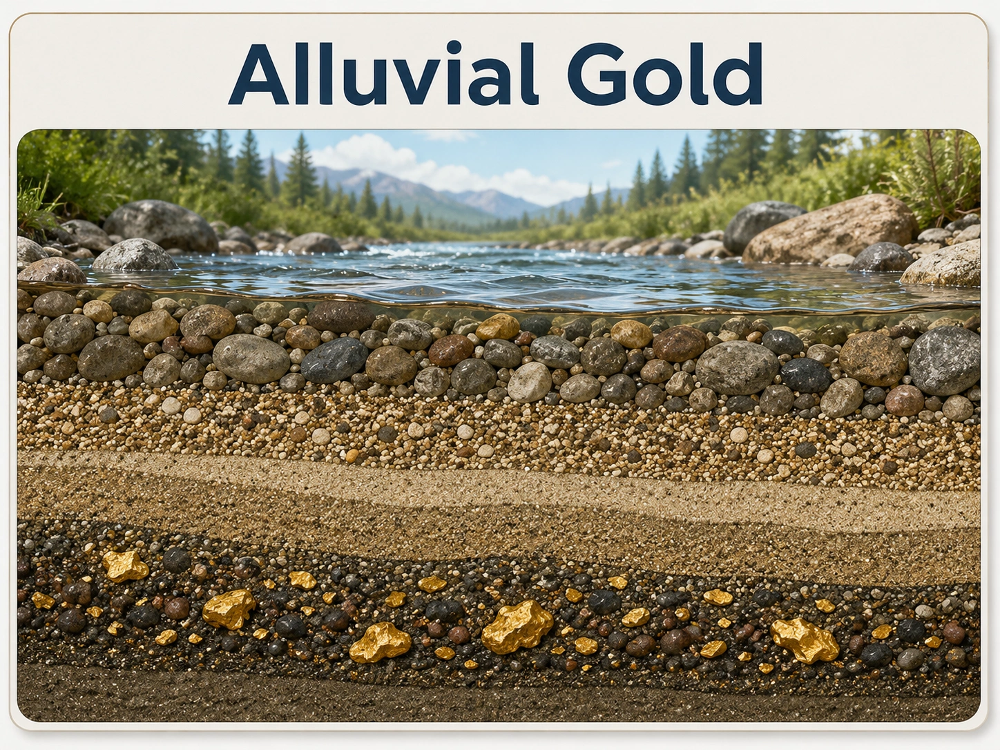
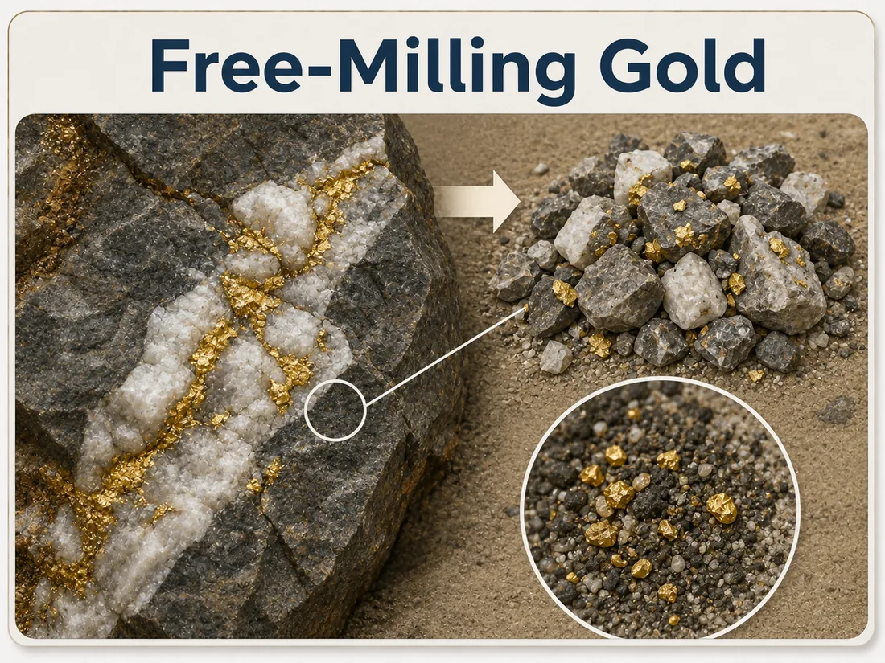
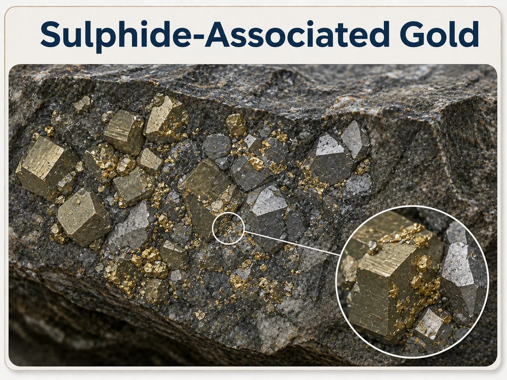
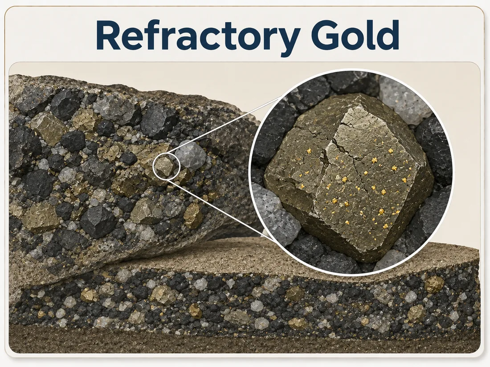

Uwezekano wa mvuto: Juu
Dhahabu iliyokwisha achiliwa na maumbile na inayopatikana kwenye changarawe, mchanga na mashapo.
Kwa kawaida huanza na upangaji wa ukubwa wa chembe na uwezekano wa mvuto.


MALIGHAFI YAKO
Jinsi dhahabu inavyojitokeza ndani ya malighafi ndiyo inayoamua hatua zinazofuata. NORSE inaanza na malighafi.

Dhahabu iliyokwisha achiliwa na maumbile na inayopatikana kwenye changarawe, mchanga na mashapo.
Kwa kawaida huanza na upangaji wa ukubwa wa chembe na uwezekano wa mvuto.

Dhahabu inayoweza kuachiliwa kimaumbile kutoka mwambani kupitia usagaji na uponzaji uliodhibitiwa.
Inahitaji uachiliaji uliodhibitiwa kabla ya urejeshaji kutathminiwa.

Dhahabu inayopatikana pamoja na madini ya salfaidi. Uwezekano wa kurejeshwa unategemea jinsi dhahabu inavyojitokeza na jinsi inavyoweza kuachiliwa kwa ufanisi.
Inahitaji upimaji kuelewa uachiliaji na uwezekano wa urejeshaji.

Dhahabu nzuri sana iliyofungwa ndani ya muundo wa madini na haiwezi kurejeshwa kwa kutenganisha kimaumbile pekee.
Inahitaji tathmini ya kitaalamu kabla ya njia ya mchakato kuchaguliwa.
THE FIRST QUESTION
Where gold is sufficiently liberated, gravity separation may provide an effective recovery route.
Some gold may be free while some remains associated with other minerals. Testwork determines the route.
When gold remains locked in mineral structures, additional evaluation is required before selecting a next step.